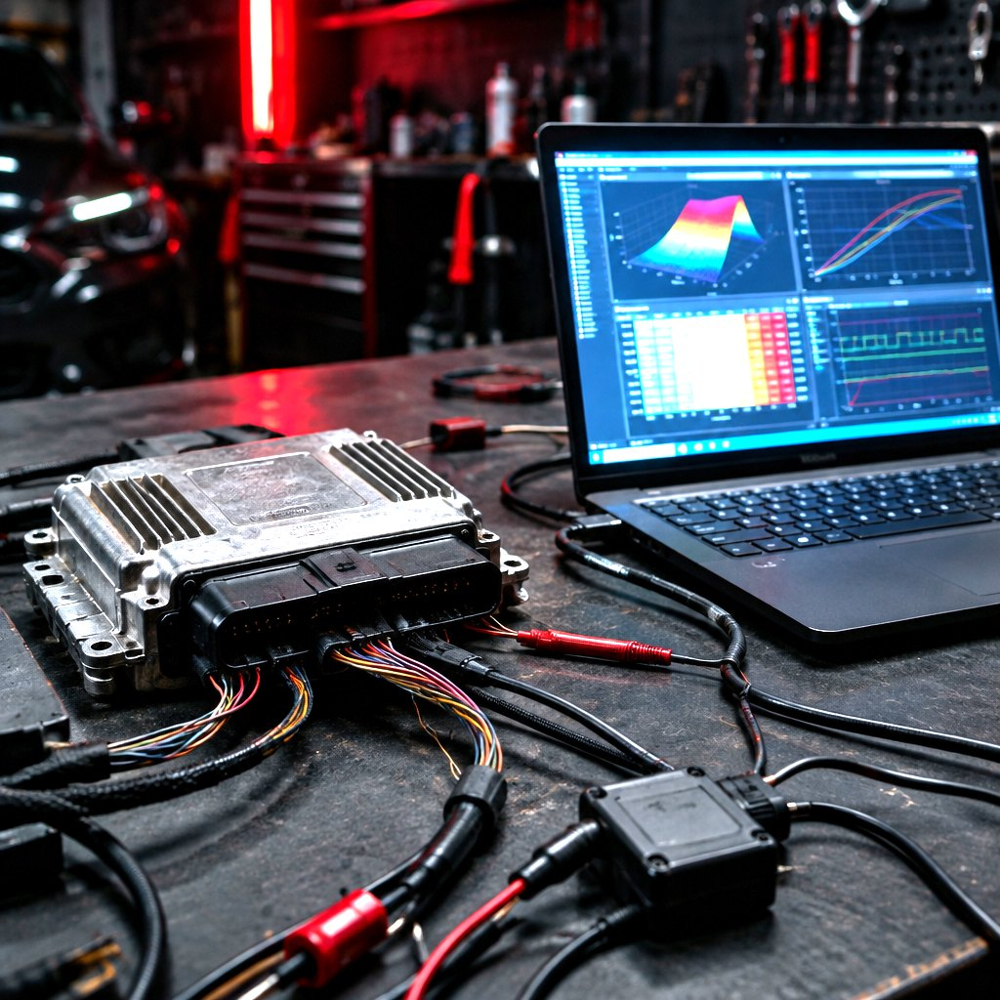

Мощность из программы, а не из железа
Программное увеличение мощности автомобилей до 2023 года выпуска: Stage 1, 2 и 3, прошивка заблокированных блоков после 2021 года, удаление AdBlue, SCR, EGR, DPF и FLAP. Замер динамики до и после.
Направления по прошивке
От стоковой машины до собранного проекта. Всё начинается с проверки: какой блок стоит и что он позволяет.
Увеличение мощности
Программная калибровка двигателя для автомобилей до 2023 года выпуска: топливо, наддув, зажигание, отклик на педаль.
Заблокированные блоки
Прошиваем блоки управления после 2021 года, закрытые производителем: работаем на снятом блоке, без «риска по OBD».
Экология
Программное и физическое удаление AdBlue (мочевина), SCR, EGR, DPF, FLAP, катализатора и системы старт-стоп.
Stage 1, 2, 3
Три уровня под разное железо: сток, выпуск и впуск, заменённая турбина. Программа пишется под ваш конфиг.
Какой Stage вашему автомобилю
Ответьте на три вопроса — покажем уровень, что к нему нужно и как выглядит кривая мощности.
Что ещё делает прошивка
Часть работ нужна не для скорости, а чтобы машина нормально ехала и не сыпала ошибками.
Индивидуальная настройка
Программа под ваши пожелания: характер педали, отклик, ограничение скорости, поведение на холостых.
Замер динамики
Замеряем разгон до и после прошивки: цифры, а не «стало лучше на ощупь».
Полное отключение ошибок
Убираем любые ошибки в ЭБУ двигателя, включая те, что остаются после удаления экологии.
Отключение дроссельной заслонки
Для проектов и нестандартных конфигураций: убираем электронную заслонку из логики.
Удаление иммобилайзера
На большинстве автомобилей: например, при замене блока или утере всех ключей.
Обновление ПО во всех блоках
BMW и VAG-группа: обновляем программное обеспечение во всех блоках управления автомобиля.
Заводская прошивка и восстановление
Если нужно вернуть машину в сток или починить блок после чужой ошибки — это тоже к нам.
Заводская прошивка AlienTech
При необходимости прошивка заменяется на заводскую загрузкой из базы данных компании AlienTech.
Восстановление блоков
Поднимаем неработоспособные блоки управления после неудачных работ у других мастеров: связь, запись, проверка.
Обновление по BMW и VAG
Обновляем ПО во всех блоках управления: двигатель, коробка, кузовные и комфорт-блоки.
Что важно знать до записи
Чип-тюнинг — вмешательство в заводскую программу. Об этом лучше знать заранее.
Гарантия и ресурс
После прошивки заводская гарантия на двигатель и коробку может быть снята. Ресурс агрегатов зависит от состояния автомобиля и манеры езды: мы не обещаем «+50% мощности без последствий» и не ставим программы, которые заведомо рвут железо.
Экология и требования
Удаление AdBlue, SCR, EGR, DPF и катализатора меняет экологические характеристики автомобиля. Решение принимает владелец, он же отвечает за соответствие требованиям при эксплуатации и прохождении проверок. Мы объясняем последствия до работ.
Про чип-тюнинг
Если вашего вопроса нет — напишите в WhatsApp, ответим по модели и блоку.
Автомобили до 2023 года выпуска — по двигателю. Блоки управления после 2021 года, закрытые производителем, тоже прошиваем, но на снятом блоке.
При спокойной езде расход обычно не растёт, при активной — растёт: мощность берётся из топлива. Ресурс зависит от состояния двигателя, обслуживания и манеры езды.
Да. При необходимости прошивка заменяется на заводскую загрузкой из базы AlienTech.
Обычно в течение дня. Блоки после 2021 года, которые надо снимать и разблокировать, могут занять больше времени — предупредим заранее.
Да, замеряем динамику разгона до и после прошивки.
Да: Stage и удаление экологии (AdBlue, SCR, EGR, DPF) делаем и на дизельных двигателях.
Готовы прошить? Позвоните
Скажите модель, год и что уже сделано с машиной — назовём уровень программы и сроки.